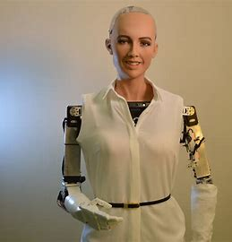

Explore o universo dos robôs!
Descubra a história da robótica, os diferentes tipos de robôs e os mais incríveis já criados.
Começar a ExplorarRobôs em Destaque
Mini Cheetah
O Mini Cheetah é um robô quadrúpede desenvolvido pelo Instituto de Tecnologia de Massachusetts (MIT). Ele se destaca por sua agilidade e capacidade de realizar movimentos complexos, como saltos, giros e até mesmo mortais.
Atlas

O novo robô Atlas da Boston Dynamics é uma versão elétrica e aprimorada do modelo anterior, com maior mobilidade, design inovador e capacidade de manipulação. Destinado a aplicações em logística, construção e indústria, representa um avanço significativo na robótica humanoide.
Sophia
Sophia é um robô humanoide desenvolvido pela Hanson Robotics, em Hong Kong, que ganhou notoriedade por sua aparência realista e capacidade de simular expressões faciais humanas. Ela foi projetada para interagir com pessoas, aprender com suas experiências e adaptar seu comportamento ao longo do tempo.